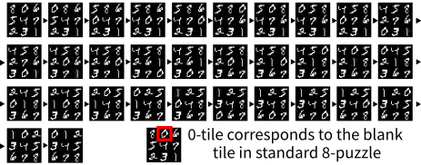
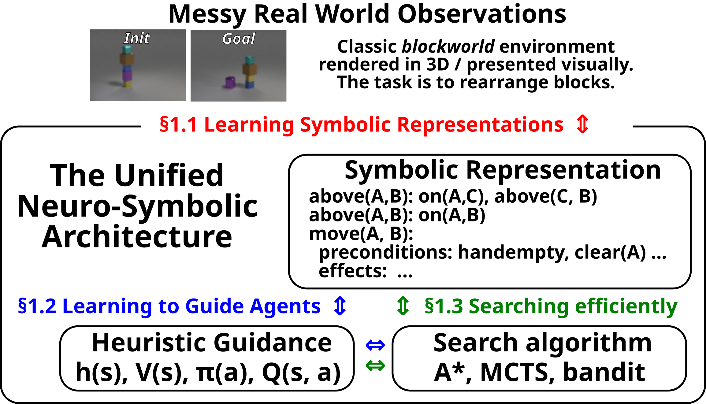

Masataro Asai
\[ \def\ceil#1{\lceil #1 \rceil} \def\floor#1{\lfloor #1 \rfloor} \def\1{\mathbf{1}} \def\0{\mathbf{0}} \newcommand{\train}{\mathcal{D}} \newcommand{\valid}{\mathcal{D_{\mathrm{valid}}}} \newcommand{\test}{\mathcal{D_{\mathrm{test}}}} \def\eps{{\epsilon}} \def\ralpha{{\text{\alpha}}} \def\rbeta{{\text{\beta}}} \def\rchi{{\text{\chi}}} \def\rdelta{{\text{\delta}}} \def\reta{{\text{\eta}}} \def\repsilon{{\text{\epsilon}}} \def\rfoo{{\text{\foo}}} \def\rgamma{{\text{\gamma}}} \def\riota{{\text{\iota}}} \def\rkappa{{\text{\kappa}}} \def\rlambda{{\text{\lambda}}} \def\rmu{{\text{\mu}}} \def\rnu{{\text{\nu}}} \def\romega{{\text{\omega}}} \def\rpi{{\text{\pi}}} \def\rrho{{\text{\rho}}} \def\rsigma{{\text{\sigma}}} \def\rtau{{\text{\tau}}} \def\rtheta{{\text{\theta}}} \def\rupsilon{{\text{\upsilon}}} \def\rxi{{\text{\xi}}} \def\rzeta{{\text{\zeta}}} \def\ra{{\textnormal{a}}} \def\rb{{\textnormal{b}}} \def\rc{{\textnormal{c}}} \def\rd{{\textnormal{d}}} \def\re{{\textnormal{e}}} \def\rf{{\textnormal{f}}} \def\rg{{\textnormal{g}}} \def\rh{{\textnormal{h}}} \def\ri{{\textnormal{i}}} \def\rj{{\textnormal{j}}} \def\rk{{\textnormal{k}}} \def\rl{{\textnormal{l}}} \def\rn{{\textnormal{n}}} \def\ro{{\textnormal{o}}} \def\rp{{\textnormal{p}}} \def\rq{{\textnormal{q}}} \def\rr{{\textnormal{r}}} \def\rs{{\textnormal{s}}} \def\rt{{\textnormal{t}}} \def\ru{{\textnormal{u}}} \def\rv{{\textnormal{v}}} \def\rw{{\textnormal{w}}} \def\rx{{\textnormal{x}}} \def\ry{{\textnormal{y}}} \def\rz{{\textnormal{z}}} \def\rA{{\textnormal{A}}} \def\rB{{\textnormal{B}}} \def\rC{{\textnormal{C}}} \def\rD{{\textnormal{D}}} \def\rE{{\textnormal{E}}} \def\rF{{\textnormal{F}}} \def\rG{{\textnormal{G}}} \def\rH{{\textnormal{H}}} \def\rI{{\textnormal{I}}} \def\rJ{{\textnormal{J}}} \def\rK{{\textnormal{K}}} \def\rL{{\textnormal{L}}} \def\rN{{\textnormal{N}}} \def\rO{{\textnormal{O}}} \def\rP{{\textnormal{P}}} \def\rQ{{\textnormal{Q}}} \def\rR{{\textnormal{R}}} \def\rS{{\textnormal{S}}} \def\rT{{\textnormal{T}}} \def\rU{{\textnormal{U}}} \def\rV{{\textnormal{V}}} \def\rW{{\textnormal{W}}} \def\rX{{\textnormal{X}}} \def\rY{{\textnormal{Y}}} \def\rZ{{\textnormal{Z}}} \def\rvalpha{{\mathbf{\alpha}}} \def\rvbeta{{\mathbf{\beta}}} \def\rvchi{{\mathbf{\chi}}} \def\rvdelta{{\mathbf{\delta}}} \def\rveta{{\mathbf{\eta}}} \def\rvepsilon{{\mathbf{\epsilon}}} \def\rvfoo{{\mathbf{\foo}}} \def\rvgamma{{\mathbf{\gamma}}} \def\rviota{{\mathbf{\iota}}} \def\rvkappa{{\mathbf{\kappa}}} \def\rvlambda{{\mathbf{\lambda}}} \def\rvmu{{\mathbf{\mu}}} \def\rvnu{{\mathbf{\nu}}} \def\rvomega{{\mathbf{\omega}}} \def\rvpi{{\mathbf{\pi}}} \def\rvrho{{\mathbf{\rho}}} \def\rvsigma{{\mathbf{\sigma}}} \def\rvtau{{\mathbf{\tau}}} \def\rvtheta{{\mathbf{\theta}}} \def\rvupsilon{{\mathbf{\upsilon}}} \def\rvxi{{\mathbf{\xi}}} \def\rvzeta{{\mathbf{\zeta}}} \def\rva{{\mathbf{a}}} \def\rvb{{\mathbf{b}}} \def\rvc{{\mathbf{c}}} \def\rvd{{\mathbf{d}}} \def\rve{{\mathbf{e}}} \def\rvf{{\mathbf{f}}} \def\rvg{{\mathbf{g}}} \def\rvh{{\mathbf{h}}} \def\rvu{{\mathbf{i}}} \def\rvj{{\mathbf{j}}} \def\rvk{{\mathbf{k}}} \def\rvl{{\mathbf{l}}} \def\rvm{{\mathbf{m}}} \def\rvn{{\mathbf{n}}} \def\rvo{{\mathbf{o}}} \def\rvp{{\mathbf{p}}} \def\rvq{{\mathbf{q}}} \def\rvr{{\mathbf{r}}} \def\rvs{{\mathbf{s}}} \def\rvt{{\mathbf{t}}} \def\rvu{{\mathbf{u}}} \def\rvv{{\mathbf{v}}} \def\rvw{{\mathbf{w}}} \def\rvx{{\mathbf{x}}} \def\rvy{{\mathbf{y}}} \def\rvz{{\mathbf{z}}} \def\ervalpha{{\text{\alpha}}} \def\ervbeta{{\text{\beta}}} \def\ervchi{{\text{\chi}}} \def\ervdelta{{\text{\delta}}} \def\erveta{{\text{\eta}}} \def\ervepsilon{{\text{\epsilon}}} \def\ervfoo{{\text{\foo}}} \def\ervgamma{{\text{\gamma}}} \def\erviota{{\text{\iota}}} \def\ervkappa{{\text{\kappa}}} \def\ervlambda{{\text{\lambda}}} \def\ervmu{{\text{\mu}}} \def\ervnu{{\text{\nu}}} \def\ervomega{{\text{\omega}}} \def\ervpi{{\text{\pi}}} \def\ervrho{{\text{\rho}}} \def\ervsigma{{\text{\sigma}}} \def\ervtau{{\text{\tau}}} \def\ervtheta{{\text{\theta}}} \def\ervupsilon{{\text{\upsilon}}} \def\ervxi{{\text{\xi}}} \def\ervzeta{{\text{\zeta}}} \def\erva{{\textnormal{a}}} \def\ervb{{\textnormal{b}}} \def\ervc{{\textnormal{c}}} \def\ervd{{\textnormal{d}}} \def\erve{{\textnormal{e}}} \def\ervf{{\textnormal{f}}} \def\ervg{{\textnormal{g}}} \def\ervh{{\textnormal{h}}} \def\ervi{{\textnormal{i}}} \def\ervj{{\textnormal{j}}} \def\ervk{{\textnormal{k}}} \def\ervl{{\textnormal{l}}} \def\ervm{{\textnormal{m}}} \def\ervn{{\textnormal{n}}} \def\ervo{{\textnormal{o}}} \def\ervp{{\textnormal{p}}} \def\ervq{{\textnormal{q}}} \def\ervr{{\textnormal{r}}} \def\ervs{{\textnormal{s}}} \def\ervt{{\textnormal{t}}} \def\ervu{{\textnormal{u}}} \def\ervv{{\textnormal{v}}} \def\ervw{{\textnormal{w}}} \def\ervx{{\textnormal{x}}} \def\ervy{{\textnormal{y}}} \def\ervz{{\textnormal{z}}} \def\rmA{{\mathbf{A}}} \def\rmB{{\mathbf{B}}} \def\rmC{{\mathbf{C}}} \def\rmD{{\mathbf{D}}} \def\rmE{{\mathbf{E}}} \def\rmF{{\mathbf{F}}} \def\rmG{{\mathbf{G}}} \def\rmH{{\mathbf{H}}} \def\rmI{{\mathbf{I}}} \def\rmJ{{\mathbf{J}}} \def\rmK{{\mathbf{K}}} \def\rmL{{\mathbf{L}}} \def\rmM{{\mathbf{M}}} \def\rmN{{\mathbf{N}}} \def\rmO{{\mathbf{O}}} \def\rmP{{\mathbf{P}}} \def\rmQ{{\mathbf{Q}}} \def\rmR{{\mathbf{R}}} \def\rmS{{\mathbf{S}}} \def\rmT{{\mathbf{T}}} \def\rmU{{\mathbf{U}}} \def\rmV{{\mathbf{V}}} \def\rmW{{\mathbf{W}}} \def\rmX{{\mathbf{X}}} \def\rmY{{\mathbf{Y}}} \def\rmZ{{\mathbf{Z}}} \def\ermA{{\textnormal{A}}} \def\ermB{{\textnormal{B}}} \def\ermC{{\textnormal{C}}} \def\ermD{{\textnormal{D}}} \def\ermE{{\textnormal{E}}} \def\ermF{{\textnormal{F}}} \def\ermG{{\textnormal{G}}} \def\ermH{{\textnormal{H}}} \def\ermI{{\textnormal{I}}} \def\ermJ{{\textnormal{J}}} \def\ermK{{\textnormal{K}}} \def\ermL{{\textnormal{L}}} \def\ermM{{\textnormal{M}}} \def\ermN{{\textnormal{N}}} \def\ermO{{\textnormal{O}}} \def\ermP{{\textnormal{P}}} \def\ermQ{{\textnormal{Q}}} \def\ermR{{\textnormal{R}}} \def\ermS{{\textnormal{S}}} \def\ermT{{\textnormal{T}}} \def\ermU{{\textnormal{U}}} \def\ermV{{\textnormal{V}}} \def\ermW{{\textnormal{W}}} \def\ermX{{\textnormal{X}}} \def\ermY{{\textnormal{Y}}} \def\ermZ{{\textnormal{Z}}} \def\vzero{{\mathbf{0}}} \def\vone{{\mathbf{1}}} \def\valpha{{\mathbf{\alpha}}} \def\vbeta{{\mathbf{\beta}}} \def\vchi{{\mathbf{\chi}}} \def\vdelta{{\mathbf{\delta}}} \def\veta{{\mathbf{\eta}}} \def\vepsilon{{\mathbf{\epsilon}}} \def\vfoo{{\mathbf{\foo}}} \def\vgamma{{\mathbf{\gamma}}} \def\viota{{\mathbf{\iota}}} \def\vkappa{{\mathbf{\kappa}}} \def\vlambda{{\mathbf{\lambda}}} \def\vmu{{\mathbf{\mu}}} \def\vnu{{\mathbf{\nu}}} \def\vomega{{\mathbf{\omega}}} \def\vpi{{\mathbf{\pi}}} \def\vrho{{\mathbf{\rho}}} \def\vsigma{{\mathbf{\sigma}}} \def\vtau{{\mathbf{\tau}}} \def\vtheta{{\mathbf{\theta}}} \def\vupsilon{{\mathbf{\upsilon}}} \def\vxi{{\mathbf{\xi}}} \def\vzeta{{\mathbf{\zeta}}} \def\va{{\mathbf{a}}} \def\vb{{\mathbf{b}}} \def\vc{{\mathbf{c}}} \def\vd{{\mathbf{d}}} \def\ve{{\mathbf{e}}} \def\vf{{\mathbf{f}}} \def\vg{{\mathbf{g}}} \def\vh{{\mathbf{h}}} \def\vi{{\mathbf{i}}} \def\vj{{\mathbf{j}}} \def\vk{{\mathbf{k}}} \def\vl{{\mathbf{l}}} \def\vm{{\mathbf{m}}} \def\vn{{\mathbf{n}}} \def\vo{{\mathbf{o}}} \def\vp{{\mathbf{p}}} \def\vq{{\mathbf{q}}} \def\vr{{\mathbf{r}}} \def\vs{{\mathbf{s}}} \def\vt{{\mathbf{t}}} \def\vu{{\mathbf{u}}} \def\vv{{\mathbf{v}}} \def\vw{{\mathbf{w}}} \def\vx{{\mathbf{x}}} \def\vy{{\mathbf{y}}} \def\vz{{\mathbf{z}}} \def\evalpha{{{\alpha}}} \def\evbeta{{{\beta}}} \def\evchi{{{\chi}}} \def\evdelta{{{\delta}}} \def\eveta{{{\eta}}} \def\evepsilon{{{\epsilon}}} \def\evfoo{{{\foo}}} \def\evgamma{{{\gamma}}} \def\eviota{{{\iota}}} \def\evkappa{{{\kappa}}} \def\evlambda{{{\lambda}}} \def\evmu{{{\mu}}} \def\evnu{{{\nu}}} \def\evomega{{{\omega}}} \def\evpi{{{\pi}}} \def\evrho{{{\rho}}} \def\evsigma{{{\sigma}}} \def\evtau{{{\tau}}} \def\evtheta{{{\theta}}} \def\evupsilon{{{\upsilon}}} \def\evxi{{{\xi}}} \def\evzeta{{{\zeta}}} \def\eva{{a}} \def\evb{{b}} \def\evc{{c}} \def\evd{{d}} \def\eve{{e}} \def\evf{{f}} \def\evg{{g}} \def\evh{{h}} \def\evi{{i}} \def\evj{{j}} \def\evk{{k}} \def\evl{{l}} \def\evm{{m}} \def\evn{{n}} \def\evo{{o}} \def\evp{{p}} \def\evq{{q}} \def\evr{{r}} \def\evs{{s}} \def\evt{{t}} \def\evu{{u}} \def\evv{{v}} \def\evw{{w}} \def\evx{{x}} \def\evy{{y}} \def\evz{{z}} \def\mA{{\mathbf{A}}} \def\mB{{\mathbf{B}}} \def\mC{{\mathbf{C}}} \def\mD{{\mathbf{D}}} \def\mE{{\mathbf{E}}} \def\mF{{\mathbf{F}}} \def\mG{{\mathbf{G}}} \def\mH{{\mathbf{H}}} \def\mI{{\mathbf{I}}} \def\mJ{{\mathbf{J}}} \def\mK{{\mathbf{K}}} \def\mL{{\mathbf{L}}} \def\mM{{\mathbf{M}}} \def\mN{{\mathbf{N}}} \def\mO{{\mathbf{O}}} \def\mP{{\mathbf{P}}} \def\mQ{{\mathbf{Q}}} \def\mR{{\mathbf{R}}} \def\mS{{\mathbf{S}}} \def\mT{{\mathbf{T}}} \def\mU{{\mathbf{U}}} \def\mV{{\mathbf{V}}} \def\mW{{\mathbf{W}}} \def\mX{{\mathbf{X}}} \def\mY{{\mathbf{Y}}} \def\mZ{{\mathbf{Z}}} \def\mBeta{{\mathbf{\beta}}} \def\mPhi{{\mathbf{\Phi}}} \def\mLambda{{\mathbf{\Lambda}}} \def\mSigma{{\mathbf{\Sigma}}} \def\gA{{\mathcal{A}}} \def\gB{{\mathcal{B}}} \def\gC{{\mathcal{C}}} \def\gD{{\mathcal{D}}} \def\gE{{\mathcal{E}}} \def\gF{{\mathcal{F}}} \def\gG{{\mathcal{G}}} \def\gH{{\mathcal{H}}} \def\gI{{\mathcal{I}}} \def\gJ{{\mathcal{J}}} \def\gK{{\mathcal{K}}} \def\gL{{\mathcal{L}}} \def\gM{{\mathcal{M}}} \def\gN{{\mathcal{N}}} \def\gO{{\mathcal{O}}} \def\gP{{\mathcal{P}}} \def\gQ{{\mathcal{Q}}} \def\gR{{\mathcal{R}}} \def\gS{{\mathcal{S}}} \def\gT{{\mathcal{T}}} \def\gU{{\mathcal{U}}} \def\gV{{\mathcal{V}}} \def\gW{{\mathcal{W}}} \def\gX{{\mathcal{X}}} \def\gY{{\mathcal{Y}}} \def\gZ{{\mathcal{Z}}} \def\sA{{\mathbb{A}}} \def\sB{{\mathbb{B}}} \def\sC{{\mathbb{C}}} \def\sD{{\mathbb{D}}} \def\sF{{\mathbb{F}}} \def\sG{{\mathbb{G}}} \def\sH{{\mathbb{H}}} \def\sI{{\mathbb{I}}} \def\sJ{{\mathbb{J}}} \def\sK{{\mathbb{K}}} \def\sL{{\mathbb{L}}} \def\sM{{\mathbb{M}}} \def\sN{{\mathbb{N}}} \def\sO{{\mathbb{O}}} \def\sP{{\mathbb{P}}} \def\sQ{{\mathbb{Q}}} \def\sR{{\mathbb{R}}} \def\sS{{\mathbb{S}}} \def\sT{{\mathbb{T}}} \def\sU{{\mathbb{U}}} \def\sV{{\mathbb{V}}} \def\sW{{\mathbb{W}}} \def\sX{{\mathbb{X}}} \def\sY{{\mathbb{Y}}} \def\sZ{{\mathbb{Z}}} \def\emLambda{{\Lambda}} \def\emA{{A}} \def\emB{{B}} \def\emC{{C}} \def\emD{{D}} \def\emE{{E}} \def\emF{{F}} \def\emG{{G}} \def\emH{{H}} \def\emI{{I}} \def\emJ{{J}} \def\emK{{K}} \def\emL{{L}} \def\emM{{M}} \def\emN{{N}} \def\emO{{O}} \def\emP{{P}} \def\emQ{{Q}} \def\emR{{R}} \def\emS{{S}} \def\emT{{T}} \def\emU{{U}} \def\emV{{V}} \def\emW{{W}} \def\emX{{X}} \def\emY{{Y}} \def\emZ{{Z}} \def\emSigma{{\Sigma}} \newcommand{\pdata}{p_{\mathrm{data}}} \newcommand{\ptrain}{\hat{p}_{\mathrm{data}}} \newcommand{\Ptrain}{\hat{P}_{\mathrm{data}}} \newcommand{\pmodel}{p_{\mathrm{model}}} \newcommand{\Pmodel}{P_{\mathrm{model}}} \newcommand{\ptildemodel}{\tilde{p}_{\mathrm{model}}} \newcommand{\pencode}{p_{\mathrm{encoder}}} \newcommand{\pdecode}{p_{\mathrm{decoder}}} \newcommand{\precons}{p_{\mathrm{reconstruct}}} \def\A{{\mathcal{A}}} \def\B{{\mathbb{B}}} \def\C{{\mathcal{C}}} \def\D{{\mathcal{D}}} \def\E{{\mathbb{E}}} \def\F{{\mathcal{F}}} \def\G{{\mathcal{G}}} \def\H{{\mathcal{H}}} \def\I{{\mathcal{I}}} \def\J{{\mathcal{J}}} \def\K{{\mathcal{K}}} \def\L{{\mathcal{L}}} \def\M{{\mathcal{M}}} \def\N{{\mathcal{N}}} \def\O{{\mathcal{O}}} \def\P{{\mathcal{P}}} \def\Q{{\mathbb{Q}}} \def\R{{\mathbb{R}}} \def\S{{\mathcal{S}}} \def\T{{\mathcal{T}}} \def\U{{\mathcal{U}}} \def\V{{\mathcal{V}}} \def\W{{\mathcal{W}}} \def\X{{\mathcal{X}}} \def\Y{{\mathcal{Y}}} \def\Z{{\mathbb{Z}}} \def\ealpha{{\bar{\alpha}}} \def\ebeta{{\bar{\beta}}} \def\echi{{\bar{\chi}}} \def\edelta{{\bar{\delta}}} \def\eeta{{\bar{\eta}}} \def\eepsilon{{\bar{\epsilon}}} \def\efoo{{\bar{\foo}}} \def\egamma{{\bar{\gamma}}} \def\eiota{{\bar{\iota}}} \def\ekappa{{\bar{\kappa}}} \def\elambda{{\bar{\lambda}}} \def\emu{{\bar{\mu}}} \def\enu{{\bar{\nu}}} \def\eomega{{\bar{\omega}}} \def\epi{{\bar{\pi}}} \def\erho{{\bar{\rho}}} \def\esigma{{\bar{\sigma}}} \def\etau{{\bar{\tau}}} \def\etheta{{\bar{\theta}}} \def\eupsilon{{\bar{\upsilon}}} \def\exi{{\bar{\xi}}} \def\ezeta{{\bar{\zeta}}} \def\ea{{\bar{a}}} \def\eb{{\bar{b}}} \def\ec{{\bar{c}}} \def\ed{{\bar{d}}} \def\ee{{\bar{e}}} \def\ef{{\bar{f}}} \def\eg{{\bar{g}}} \def\eh{{\bar{h}}} \def\ei{{\bar{i}}} \def\ej{{\bar{j}}} \def\ek{{\bar{k}}} \def\el{{\bar{l}}} \def\en{{\bar{n}}} \def\eo{{\bar{o}}} \def\ep{{\bar{p}}} \def\eq{{\bar{q}}} \def\er{{\bar{r}}} \def\es{{\bar{s}}} \def\et{{\bar{t}}} \def\eu{{\bar{u}}} \def\ev{{\bar{v}}} \def\ew{{\bar{w}}} \def\ey{{\bar{y}}} \def\ez{{\bar{z}}} \newcommand{\emp}{\tilde{p}} \newcommand{\lr}{\alpha} \newcommand{\reg}{\lambda} \newcommand{\rect}{\mathrm{rectifier}} \newcommand{\softmax}{\mathrm{softmax}} \newcommand{\sigmoid}{\mathrm{sigmoid}} \newcommand{\softplus}{\zeta} \newcommand{\KL}{D_{\mathrm{KL}}} \newcommand{\Var}{\mathrm{Var}} \newcommand{\standarderror}{\mathrm{SE}} \newcommand{\Cov}{\mathrm{Cov}} \newcommand{\normlzero}{L^0} \newcommand{\normlone}{L^1} \newcommand{\normltwo}{L^2} \newcommand{\normlp}{L^p} \newcommand{\normmax}{L^\infty} \newcommand{\parents}{Pa} % See usage in notation.tex. Chosen to match Daphne's book. \def\Mid{\mathrel{\|}} \newcommand{\union}{\cup} \newcommand{\intersection}{\cap} \newcommand{\brackets}[1]{{\left<#1\right>}} \newcommand{\braces}[1]{{\left\{#1\right\}}} \newcommand{\parens}[1]{{\left(#1\right)}} \newcommand{\bars}[1]{{\left|#1\right|}} \newcommand{\then}{\therefore \qquad} \newcommand{\from}{\leftarrow} \newcommand{\then}{\Rightarrow} \newcommand{\when}{\Leftarrow} \newcommand{\iff}{\Leftrightarrow} \def\qed{\hfill $\Box$} \newcommand{\erf}{\mathsf{erf}} \newcommand{\cerf}{\mathsf{cerf}} \newcommand{\erfi}{\mathsf{erfi}} \newcommand{\cerfi}{\mathsf{cerfi}} \newcommand{\supp}{\mathsf{supp}} %support \newcommand{\elbo}{\mathsf{elbo}} \newcommand{\iid}{i.i.d.\xspace} \newcommand{\bern}{\text{\small Bernoulli}} \newcommand{\cat}{\mathbf{Cat}} %categorical \newcommand{\gsdist}{\mathbf{GS}} \newcommand{\dir}{\mathbf{Dir}} %dirichlet \newcommand{\bin}{\mathbf{Bin}} %binomial \newcommand{\invchi}{\mathrm{Inv}\chi^2} %scaled inverse chi^2 \newcommand{\pareto}{\mathrm{Pa}} %pareto \newcommand{\gumbel}{\mathrm{Gumbel}} %pareto \newcommand{\gp}{\mathrm{GP}} %generalized pareto \newcommand{\lomax}{\mathrm{Lomax}} \newcommand{\ipareto}{\mathrm{iPa}} \newcommand{\power}{\mathrm{Pow}} \newcommand{\logpower}{\mathrm{LogPow}} \newcommand{\Exp}{\mathrm{Exp}} \newcommand{\EVD}{\mathrm{EVD}} \]
guicho2.71828-at-gmail.com | Google scholar | dblp | LinkedIn | Github | Twitter
Masataro Asai is a Staff Research Scientist at MIT-IBM Watson AI Lab in Cambridge, MA, US. He specializes in classical planning, heuristic graph search, deep learning, Bayesian generative modeling, and a variety of topics covering neuro-symbolic approaches. He finished his PhD at University of Tokyo in 2018, advised by Alex Fukunaga.
1. News
- 2025/12/11 Revamped the website for a more professional look
- 2025/12/01 Verbalized Algorithms presented at Neurips 2025 Efficient Reasoning workshop.
- Classical algorithms are immensely useful for modulating LLM's reasoning behavior. Why reinvent the wheel?
- See my LinkedIn post on this.
- 2025/11/07 Two papers accepted in AAAI-26:
- Bilevel MCTS for Amortized O(1) Node Selection in Classical Planning. Masataro Asai.
- State of the art in Agile planning with MCTS!
- Extreme Value Monte Carlo Tree Search for Classical Planning. Masataro Asai, Stephen Wissow.
- We answer how we should understand the bellman backup (backing up min/max) from the statistical point of view.
- Bilevel MCTS for Amortized O(1) Node Selection in Classical Planning. Masataro Asai.
- 2025/06/04 Published "Don't Do That!": Guiding Embodied Systems through Large Language Model-based Constraint Generation on Arxiv.
- LLM-based path generation is terrible. We instead control traditional path planners (RRT, RRT*, A*) with LLM-generated geometric constraints.
- 2024/10/24 Received an Outstanding Paper Award at ECAI 2024.
- Scale-Adaptive Balancing of Exploration and Exploitation in Classical Planning, Stephen Wissow and Masataro Asai.
- 2024/07 Carlos Nunez Molina has presented our joint work at IJCAI 2024.
- On using admissible bounds for learning forward search heuristics, Carlos Núñez-Molina, Masataro Asai, Pablo Mesejo, Joan Fernández-Olivares.
- We answer how we should learn heuristic functions when some bounds are known. Keywords are:
2. Research Interest
Neuro-Symbolic Systems (Machine Learning + Classical AI) for search/planning/reasoning, with an emphasis on Bayesian generative modeling (e.g., variational inference). This includes:
- Automatic identification of discrete structured representation for planning (symbol grounding and knowledge acquisition).
- Learning a search policy / heuristics for faster problem solving.
- Statistically well-motivated search algorithms inspired by multi-armed bandits.
Recent work also focuses on LLM-based reasoning, inference-time scaling, and algorithmic guarantees while using LLMs.

Figure 1: Result of solving 8-puzzle with learned discrete latents.

Figure 2: Cognitive system modules: perception, heuristics, search.
3. Work Experience
- 07/2019–present
- Staff Research Scientist (PI) at MIT-IBM Watson AI Lab, IBM Research Cambridge (Full Time).
- 04/2018–07/2019
- Research Staff Member (PI), Embodied Learning Group, IBM Research Tokyo (Full Time).
- 08/2016–11/2016
- Research Intern, IBM Research Ireland.
- 04/01/2016–03/31/2018
- Research Fellow (DC2), Japan Society for the Promotion of Science.
4. Awards
- 10/2024
- Outstanding Paper Award, 27th European Conference on Artificial Intelligence.
- 06/2022
- ICAPS 2022 Outstanding PC and SPC Award (Outstanding Program Committee Members).
- 03/2017
- JSAI Annual Conference Student Award, The Japanese Society for Artificial Intelligence.
5. Grants
- 09/2022–09/2024
- DTIC contract FA8075-18-D-0008, Task Order FA807520F0060, Task 4 - Autonomous Defensive Cyber Operations (DCO) Research & Development (R&D).
- 04/2016–03/2018
- JSPS Grant-in-Aid for JSPS Fellows and JSPS KAKENHI grant, Project No. 16J10073.
6. Thesis Supervision
- 2024
- Carlos Núñez-Molina*, Universidad de Granada (Ph.D, Summa Cum Laude)
- 2025
- Amin Seffo, Technical University of München (M.Sc)
- 2026
- Supriya Lall, MIT EECS (M.Eng)
7. Misc.
My Erdos number is 5 (probably).
P. Erdos -> D.J. Kleitman -> T.C. Hu -> A.B. Kahng -> A. Fukunaga -> M. Asai